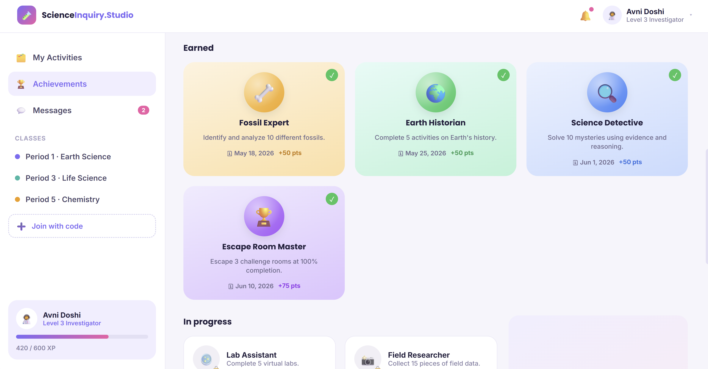
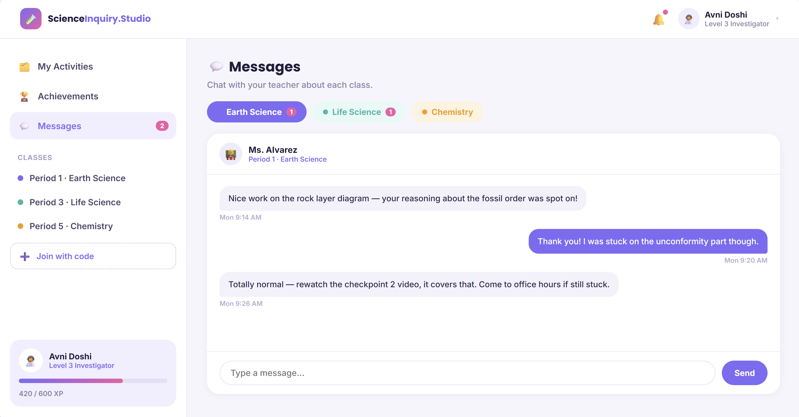
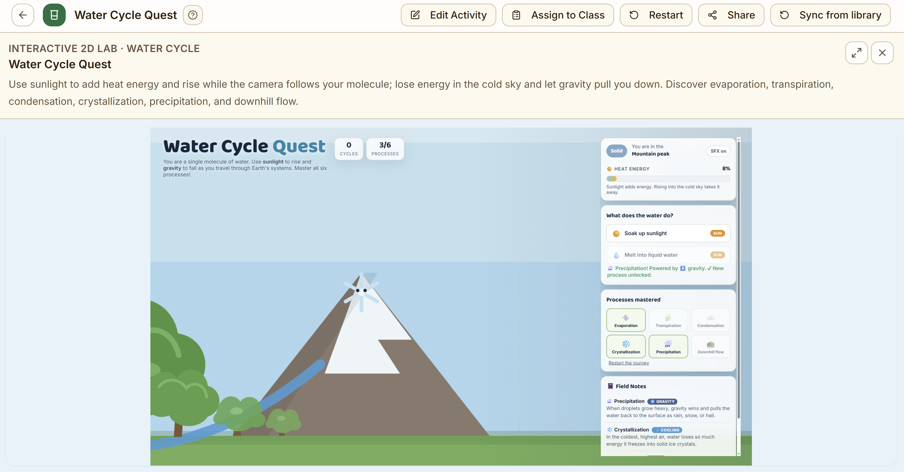
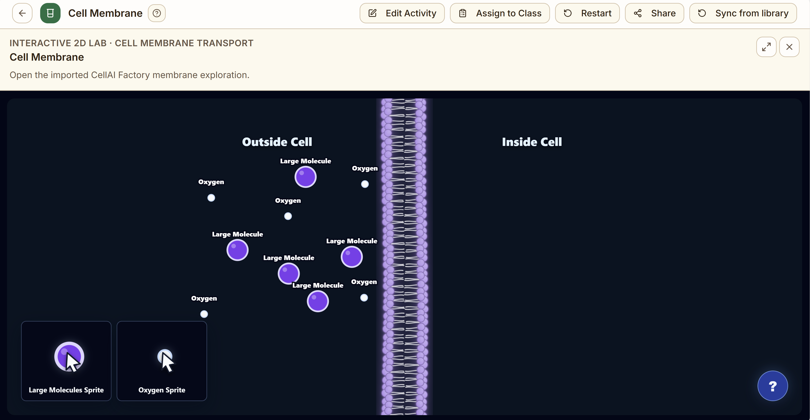
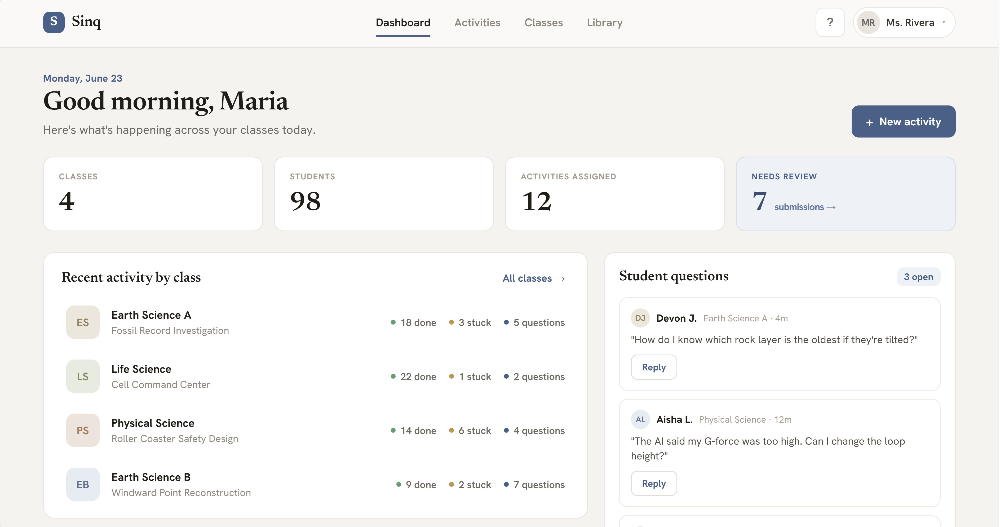
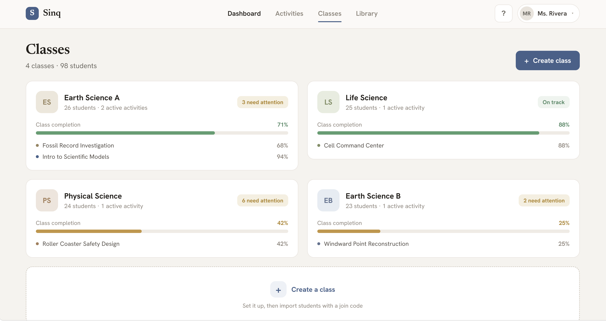
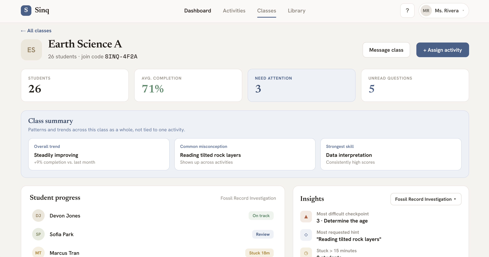

Science Inquiry Studio
An AI-supported science learning platform designed to help middle school students build scientific understanding and practical AI literacy through inquiry-based activities.
Visit Science Inquiry StudioOverview
Science Inquiry Studio is a collaborative research and development project within UC Irvine's Digital Learning Lab. The platform is being created with researchers, software developers, curriculum designers, teachers, and students as part of the NSF-funded Computing and AI for All initiative.
The team is developing grade 6 through 8 science experiences aligned with California Science Standards while introducing students to data, AI systems, model limitations, and responsible technology use. The platform includes distinct student and teacher experiences supported by interactive investigations, classroom communication, progress tracking, and instructional insights.
What I did
As a Software Development Engineer and Research Intern for UCI's Digital Learning Lab, I lead the UI and interaction design for Science Inquiry Studio's student and teacher platforms. I designed both interfaces end to end, establishing the visual system, navigation architecture, information hierarchy, reusable components, and role-specific workflows that shape how students and educators use the product.
I work directly with teachers and researchers to translate classroom needs, curriculum goals, and California Science Standards into detailed product requirements. I lead the student-testing process, including planning studies, conducting sessions, evaluating usability, engagement, and comprehension, and translating the findings into prioritized interface and interaction improvements.
Beyond the core platforms, I help prototype and develop selected interactive science games and simulations. My work connects instructional goals with technical implementation so students can explore scientific systems through experimentation, immediate feedback, and data interpretation.
Student platform
The student experience organizes assigned activities, progress, achievements, and teacher communication in an approachable interface. Activities use checkpoints, feedback, and game-based exploration to help students practice scientific reasoning while building confidence with AI-supported learning applications.





Teacher platform
The teacher experience gives educators a clear view of class activity, completion, student questions, misconceptions, and areas requiring support. Teachers can manage classes, assign activities, review progress, understand and address student questions, and use instructional insights to respond to student needs.


